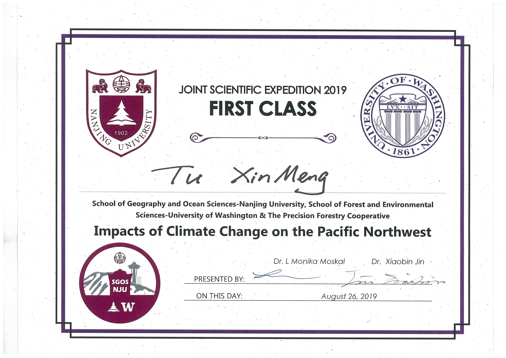
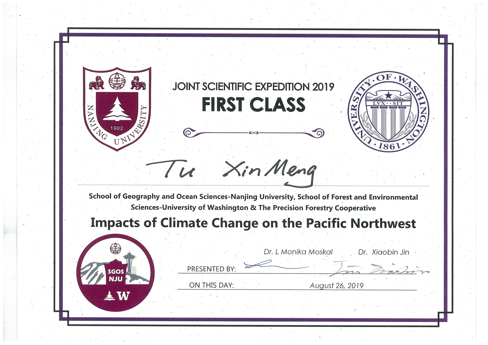

Xinmeng Tu
* Senior (Class 2021)
* School of Geography and Ocean Science, Nanjing University
* Major: GIS (Geographic Information Science)
* Research interest: spatio-temporal data mining, spatial disturbance detection.
Research Experience
Zhenjie Chen's research group
• Spatio-temporal data mining based on adaptive adjacent criteria
• A new algorithm to extract automatically the best proximity threshold for
polygons data, mine association rules, and filter the data mining results using two-level filtering
• Spatial data visualization and geographic zoning
• Investigation of the land use data of Xinbei District, Changzhou City, Jiangsu Province, China
Guang Zheng's research group
• Identification of temperate forest disturbances by combining time-series Landsat spectral and aerial laser scanning data
• An algorithm to identify deforestation strategies through airborne LIDAR data processing,
tree segmentation, and calculation of tree gap fraction and tree height
• Implementation in Washington and Oregon States in USA region and northeast forested area in China region
• Comparative analysis of driving force in terms of natural conditions, policies, laws, and awareness of protection
Publication
Analyzing geographical characteristics of straw burning in China during the past 5 years
Mar 2019

Geographical Research
(accepted)
1st Award Forum of Sciences & Arts of Nanjing University
Spatial and temporal patterns of open straw burning in China from 2014 to 2018
June 2019

Renewable Energy
(under review)
Temporal and spatial changes of burning point of straw in China from 2014 to 2018
Oct 2019
Transactions of the Chinese Society of Agricultural Engineering
(accepted)
Regional Pattern Mining of Land Use with Adaptive Adjacent Criteria
Oct 2019
Cartography and Geographic Information Science
(accepted)
Combining time-series Landsat spectral and aerial laser scanning data for identifying temperate forest disturbances
June 2020
Forest
(under review)
Education
Nanjing University
GPA: 4.63 / 5
Rank: 1 / 57
Leadership Experience:
Monitor of GIS class (2017-2018),
League branch secretary of GIS class (2019- ),
Freshman mentor (2019- )
TOEFL: 104 (updated in 2019)
GRE: 331
Sept 2017 - Present
University of Pennsylvania
GPA: 4.0/4.0
Course: Planning by Numbers (Graduate Course), Seminar Cultural Psych, Urban Research Methods, and Intro City Planning
Jan 2020 - May 2020
Competition
"Challenge Cup" National College Student Extra-curricular Academic Science and Technology Works Competition
1st Prize in China // Grand Prize in Jiangsu Province


Geographical Exhibition Competition
2nd Award in China
2nd Award in Northern Division


Innovation and Creative Competition of School of Geography and Ocean Science
1st Award
Practice
Commonweal Micro Film

Social Practice about Garbage Classification
Geological field practice

Geographical field practice
Joint Scientific Expedition 2019 - Nanjing University & University of Washington
website: “https://sites.uw.edu/nanjingu/”
 


Volunteering and Club Activity
Volunteering
Programs: 30+
- Guiding volunteer in Nanjingnan Railway Station
- Remained elderly visiting
- Handmade teaching for the elderly
- Environmental charity sale
- ...


Club Activity
serve as Captain in Passion Street Dance Club
Passion is one of the top ten clubs in NJU. I am in charge of things like team trainings, competitions, promo filming, etc.


- Welcome Party for Geoscience Freshman
- Campus Top Ten Singers Competition
- "Wudong Maricle" Party
- 12th Anniversary Celebration of Passion
- 13th Anniversary Celebration of Passion
-
Millitary Training Party
...


Honor & Awards
- National Scholarship
- Merit student of Jiangsu Province
- Duxia Scholarship (8 individuals per year)
- 1st Award Forum of Sciences & Arts of Nanjing University
- Excellent student in NJU
- Excellent League member in NJU
- Excellent student in social practice
- Student aid ambassador in NJU
- Freshman mentor
- Leader of excellent team in Nan Xing Dream Plan
- ...